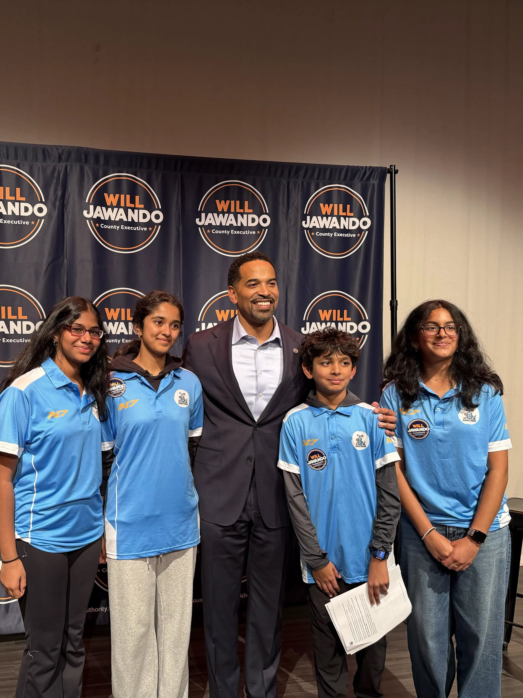

Advocating for STEM & Robotics with Community Leaders
BlackRock Center for the Arts · community leaders and elected officials

Past event
Back to events
Event details
October 13, 2026 · 05:30 PM – 09:00 PM Eastern Time
We met with community leaders and elected officials to discuss robotics, STEM, and how students can use technology to solve real-world problems. We shared our perspectives and advocated for greater access to hands-on STEM and robotics experiences for students.
Read the Instagram recapBack to events
From the event.
View the original postLet’s build what’s next.
Invite us to a community meeting, or tell us where STEM is missing.